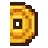

📅 第
1
天
05:00

金币
50
❤
100
杂货铺
买麦种(3金)
卖出全部产出
WASD/方向键走，空格用工具。作物按天生长，每天05:00鸡鸣结算。
✋ 使用工具（空格/E）
🛠 调试:
跳过一天(结算)
快进7天
+100金
+麦种×10
+小麦×10
睡觉(回健康)
存档
新游戏
操作：
WASD/方向键
移动 ｜
空格/E
用工具 ｜ 数字键1-6换工具 ｜ 走到鸡舍/酒缸前用工具互动 ｜ 先耕地→播种→
每天浇水
→到成熟天数收割。
headless架构
：删掉画面逻辑照跑；调试面板可秒快进验数值。
🏪 杂货铺
✕ 离开
买入
卖出
买：种子/工具 ｜ 卖：作物/畜产/成品。（走到铺子门前按空格开关）